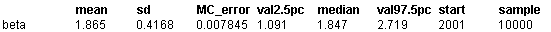

![[endo0]](endo0.bmp) Endo: conditional inference in
Endo: conditional inference in
case-control studies
Breslow and Day (1980) analyse a set of data from a case-control study relating endometrial cancer with exposure to estrogens. 183 pairs of cases and controls were studied, and the full data is shown below.
We denote estrogen exposure as x
ij
for the ith case-control pair, where j=1 for a case and j=2 for a control. The conditional likelihood for the log (odds ratio)
b
is then given by
P
i
exp
b
x
i1
/ (exp
b
x
i1
+ exp
b
x
i2
)
We shall illustrate three methods of fitting this model. It is convenient to denote the fixed disease status as a variable Y
i1
= 1, Y
i2
= 0.
First, Breslow and Day point out that for case-control studies with a single control per case, we may obtain this likelihood by using unconditional logistic regression for each case-control pair. That is
Y
i1
~ Binomial(p
i
,2)
logit p
i
=
b
(x
i1
-
x
i2
)
Second, the Classic BUGS manual (version 0.5) section on
Conditional likelihoods in case-control studies
discusses fitting this likelihood directly by assuming the model
Y
i.
~ Multinomial(p
i
.
, 1)
p
ij
= e
ij
/
S
j
e
ij
log e
ij
=
b
x
ij
Finally, the Classic BUGS manual (version 0.5) shows how the multinomial-Poisson transformation can be used. In general, this will be more efficient than using the multinomial-logistic parameterisation above, since it avoids the time-consuming evaluation of
S
j
e
ij
. However, in the present example this summation is only over J=2 elements, whilst the multinomial-Poisson parameterisation involves estimation of an additional intercept parameter for each of the 183 strata. Consequently the latter is
less
efficient than the multinomial-logistic in this case.
We note that all these formulations may be easily extended to include additional subject-specific covariates, and that the second and third methods can handle arbitrary numbers of controls per case. In addition, the Bayesian approach allows the incorporation of hierarchical structure, measurement error, missing data and so on.
All these techniques are illustrated in the code given below, which includes a transformation of the original summary statistics into full data. In this example, all but the second conditional-likelihood approach are commented out.
model
{
# transform collapsed data into full
for (i in 1 : I){
Y[i,1] <- 1
Y[i,2] <- 0
}
# loop around strata with case exposed, control not exposed (n10)
for (i in 1 : n10){
est[i,1] <- 1
est[i,2] <- 0
}
# loop around strata with case not exposed, control exposed (n01)
for (i in (n10+1) : (n10+n01)){
est[i,1] <- 0
est[i,2] <- 1
}
# loop around strata with case exposed, control exposed (n11)
for (i in (n10+n01+1) : (n10+n01+n11)){
est[i,1] <- 1
est[i,2] <- 1
}
# loop around strata with case not exposed, control not exposed (n00)
for (i in (n10+n01+n11+1) :I ){
est[i,1] <- 0
est[i,2] <- 0
}
# PRIORS
beta ~ dnorm(0,1.0E-6) ;
# LIKELIHOOD
for (i in 1 : I) { # loop around strata
# METHOD 1 - logistic regression
# Y[i,1] ~ dbin( p[i,1], 1)
# logit(p[i,1]) <- beta * (est[i,1] - est[i,J])
# METHOD 2 - conditional likelihoods
Y[i, 1 : J] ~ dmulti( p[i, 1 : J],1)
for (j in 1:2){
p[i, j] <- e[i, j] / sum(e[i, ])
log( e[i, j] ) <- beta * est[i, j]
}
# METHOD 3 fit standard Poisson regressions relative to baseline
#for (j in 1:J) {
# Y[i, j] ~ dpois(mu[i, j]);
# log(mu[i, j]) <- beta0[i] + beta*est[i, j];
}
#beta0[i] ~ dnorm(0, 1.0E-6)
}
Data
( cklick to open )
Inits for chain 1
Inits for chain 2
( cklick to open )
Results
A 5000 update burn in followed by a further 10000 updates gave the parameter estimates
